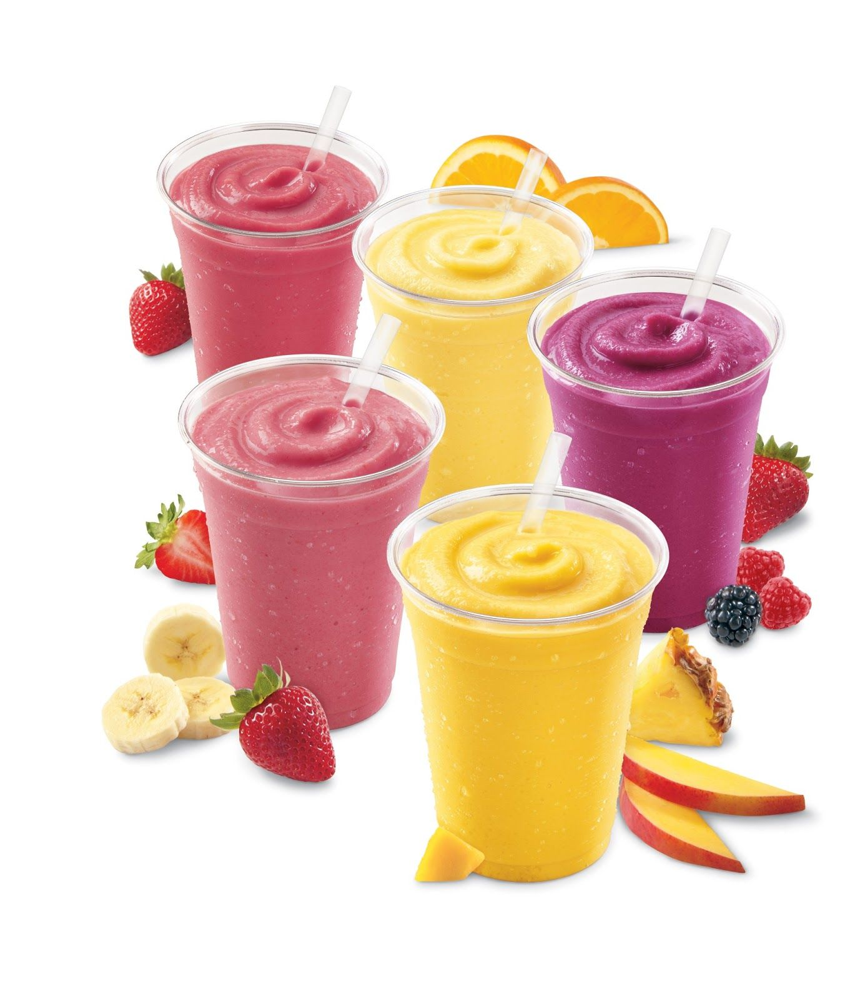
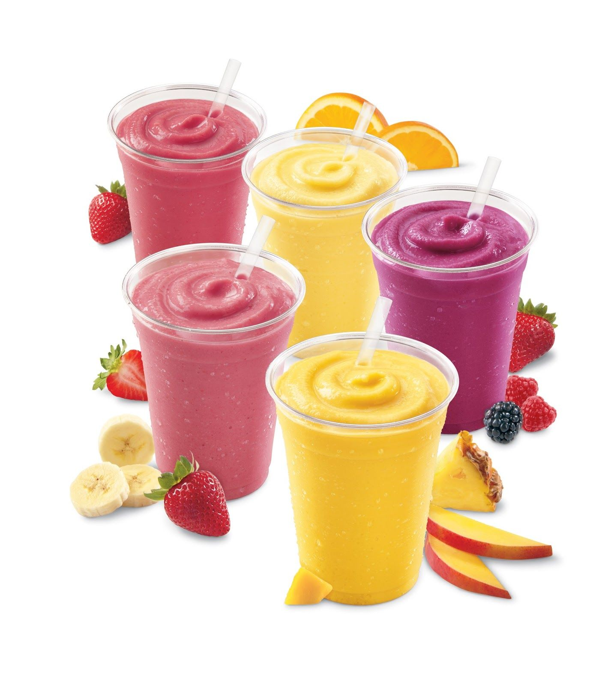

Smoothies
Ly sinh tố mát lạnh với hương vị trái cây tươi, giúp bạn bổ sung năng lượng một cách lành mạnh! Món đồ uống này không chỉ dễ làm mà còn rất linh hoạt, cho phép bạn thỏa sức sáng tạo với các loại trái cây và nguyên liệu yêu thích.

 

Nguyên liệu
- Chuối: 1 quả (chọn chuối chín, có thể cắt lát và đông lạnh trước để sinh tố đặc và mát hơn).
- Trái cây khác: 100g dâu tây (tươi hoặc đông lạnh) hoặc xoài chín cắt miếng. (Có thể thay thế bằng việt quất, bơ, dứa, táo...).
- Sữa: 200ml sữa tươi không đường (hoặc sữa hạnh nhân, sữa đậu nành, sữa yến mạch tùy chọn).
- Chất tạo ngọt: 1-2 muỗng cà phê mật ong hoặc đường (điều chỉnh tùy khẩu vị).
- Đá viên: Đủ dùng (nếu không dùng trái cây đông lạnh).
- Topping (tùy chọn): Hạt chia, hạt lanh, yến mạch, sữa chua, granola, lá bạc hà để trang trí.
Cách pha chế
-
Bước 1: Chuẩn bị nguyên liệu
- Rửa sạch các loại trái cây. Chuối lột vỏ, cắt thành khúc nhỏ. Dâu tây bỏ cuống, cắt đôi (nếu quả lớn). Xoài gọt vỏ, cắt miếng.
- Nếu dùng trái cây tươi và muốn sinh tố đặc hơn, bạn có thể đông lạnh trái cây trước khoảng 1-2 giờ.
-
Bước 2: Xay sinh tố
- Cho tất cả các nguyên liệu đã chuẩn bị vào máy xay sinh tố: chuối, dâu tây/xoài, sữa tươi, mật ong/đường và đá viên (nếu dùng).
- Đậy nắp máy xay và xay nhuyễn ở tốc độ cao cho đến khi hỗn hợp mịn màng, không còn lợn cợn. Nếu hỗn hợp quá đặc, có thể thêm một chút sữa hoặc nước để dễ xay hơn.
-
Bước 3: Điều chỉnh độ ngọt và độ đặc
- Nếm thử sinh tố. Nếu muốn ngọt hơn, thêm mật ong hoặc đường và xay thêm vài giây cho tan.
- Nếu muốn sinh tố đặc hơn, thêm một ít đá viên hoặc trái cây đông lạnh và xay lại. Nếu muốn lỏng hơn, thêm chút sữa hoặc nước.
-
Bước 4: Hoàn thiện và thưởng thức
- Đổ sinh tố ra ly.
- Nếu thích, rắc thêm hạt chia, hạt lanh, hoặc trang trí bằng một lát trái cây tươi, vài lá bạc hà.
- Dùng ngay khi sinh tố còn mát lạnh để cảm nhận trọn vẹn hương vị tươi ngon.
Mẹo nhỏ để Smoothies ngon hơn:
- Trái cây đông lạnh: Sử dụng trái cây đông lạnh sẽ giúp sinh tố đặc, mát và không cần dùng quá nhiều đá, tránh làm loãng hương vị.
- Thêm protein/chất xơ: Bạn có thể thêm sữa chua không đường, bột protein, yến mạch, hoặc rau xanh (như cải bó xôi) để tăng cường dinh dưỡng.
- Độ ngọt: Điều chỉnh lượng đường/mật ong tùy theo độ ngọt tự nhiên của trái cây và khẩu vị cá nhân.
- Sáng tạo hương vị: Thử nghiệm với các loại trái cây và sữa khác nhau để tạo ra những hương vị sinh tố độc đáo. Ví dụ: chuối bơ, dâu chuối, xoài dứa...
- Độ sánh: Nếu muốn sinh tố sánh hơn, giảm lượng sữa. Nếu muốn lỏng hơn, tăng lượng sữa hoặc thêm chút nước.
▶️ Xem video hướng dẫn chi tiết
← Quay lại trang chủ
Bình luận và Đánh giá
Đánh giá của bạn
Chưa có bình luận nào.